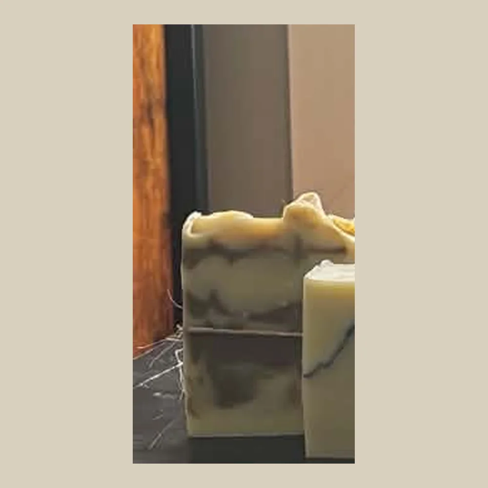
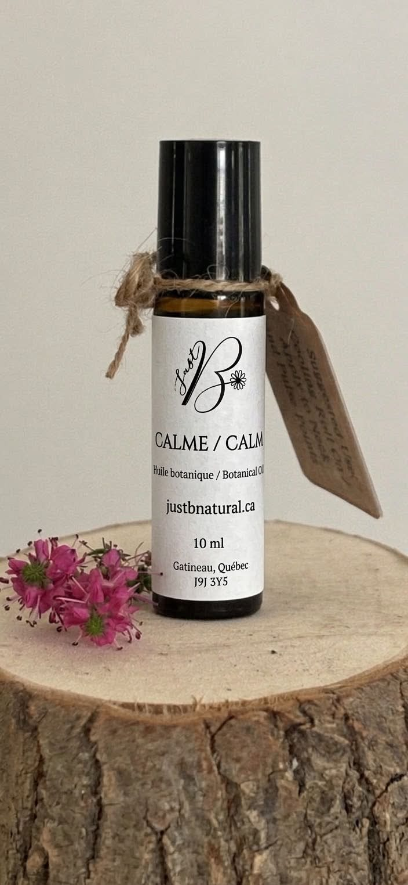
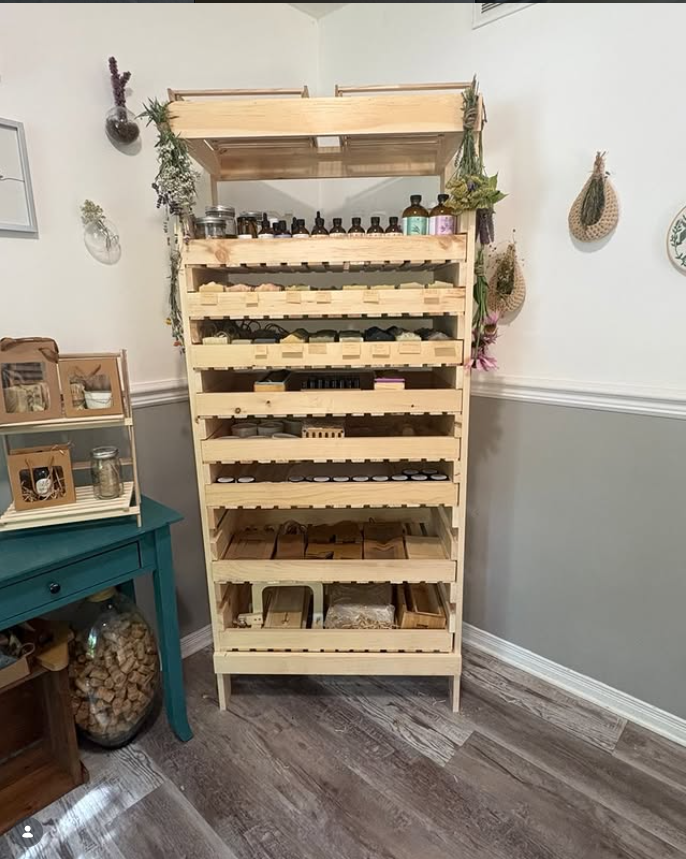

Handmade in Gatineau, Québec
Simple ingredients.
Beautiful everyday rituals.
JUST B ❁ Clean & Authentic. Pure ingredients, gentle on the earth. Scented only with pure steam-distilled essential oils, coloured with natural clays, and thoughtfully crafted without synthetic shortcuts to complement nature’s design.
Touch the leaves. Let them dance.
Explore the collection
Shop by category

Artisan Soaps
Pure, handcrafted bars in rotating scents and colours.

Botanical Oils
Calm, Eased and Balanced botanical oils.

Sugar Scrubs
Lavender Bloom, Harvest and Vanilla exfoliating scrubs.

Body Care
Mango butter and whipped tallow moisturizers.

Home & Linen
Rested room spray and zero-waste solid dish soap.
Ingredients, scents & care
Curious about what goes into each product?
Explore the ingredients, essential-oil scents, soapmaking basics, care guidance, and answers to common questions.
Visit the FAQ →A few favourites
Featured products
Open any product for its full details.
Follow along on Instagram
See what’s new at
@justb.naturals
New batches, current scents and availability are shared on Instagram.

View @justb.naturals ↗Personal, simple and direct
How ordering works
- 1Build your cart
Add one or several products while you browse.
- 2Send your request
Review quantities, add a note, and choose your preferred payment method.
- 3Confirm
We will confirm availability and pickup details by email. Local delivery is available for an additional distance-based fee.